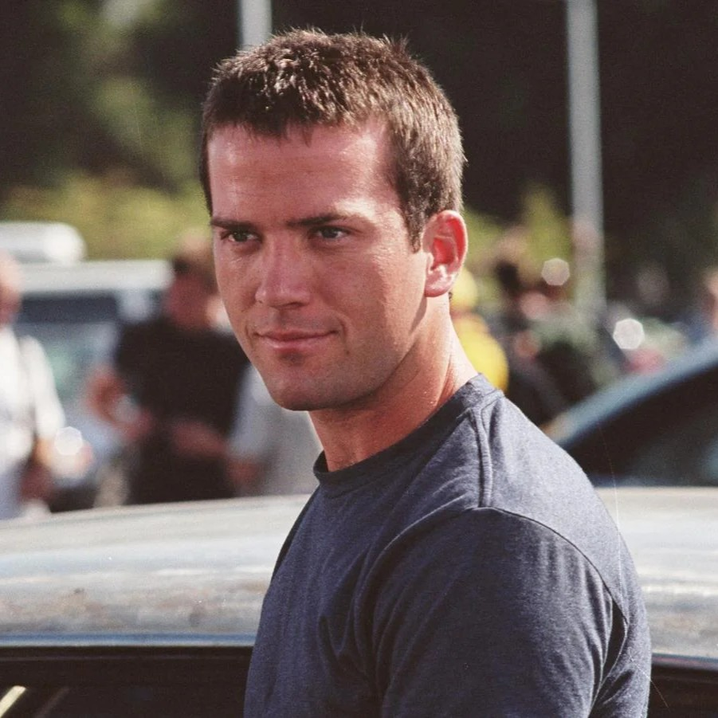
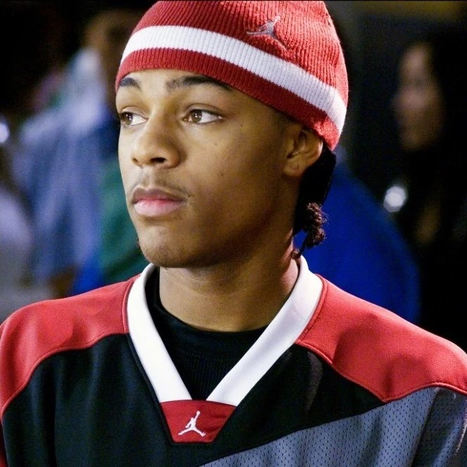
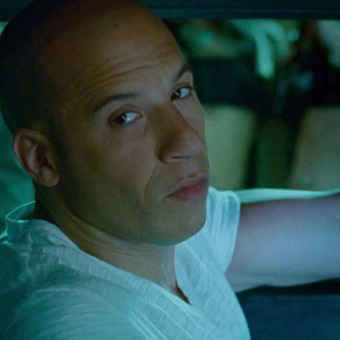
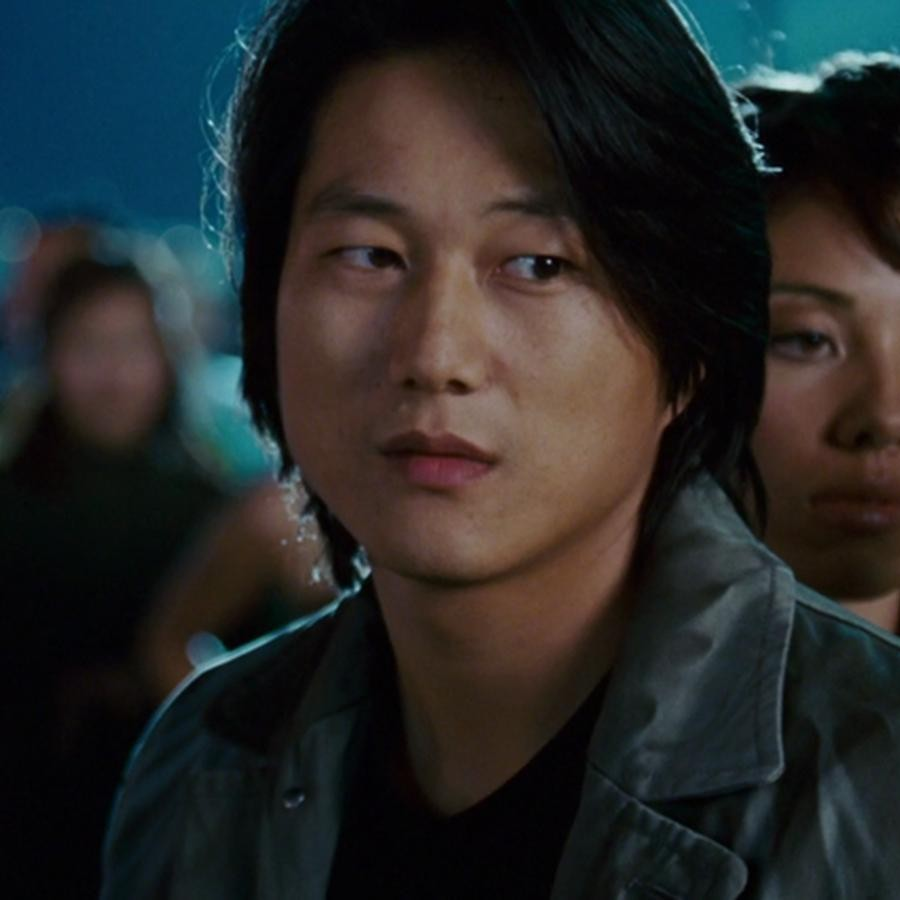
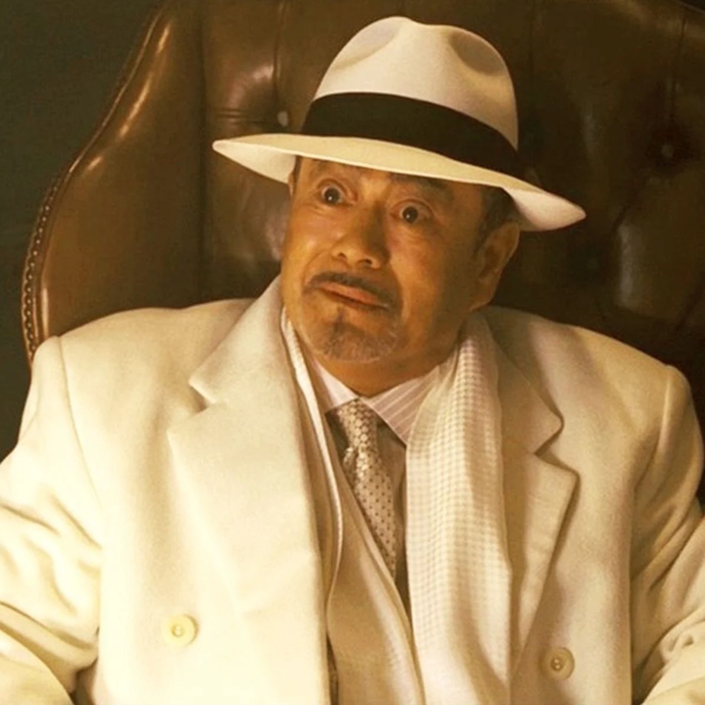
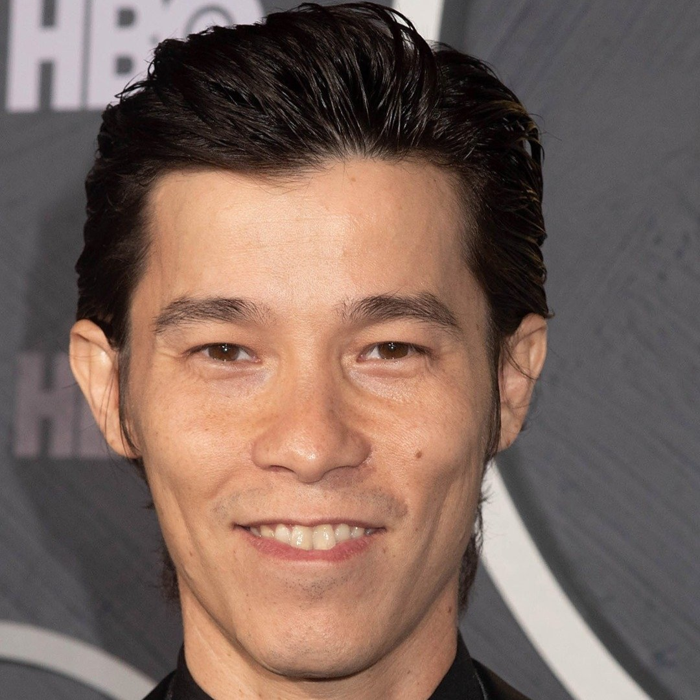
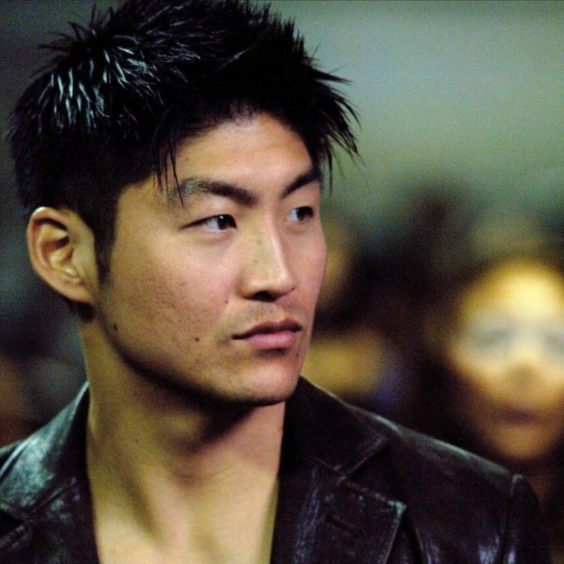
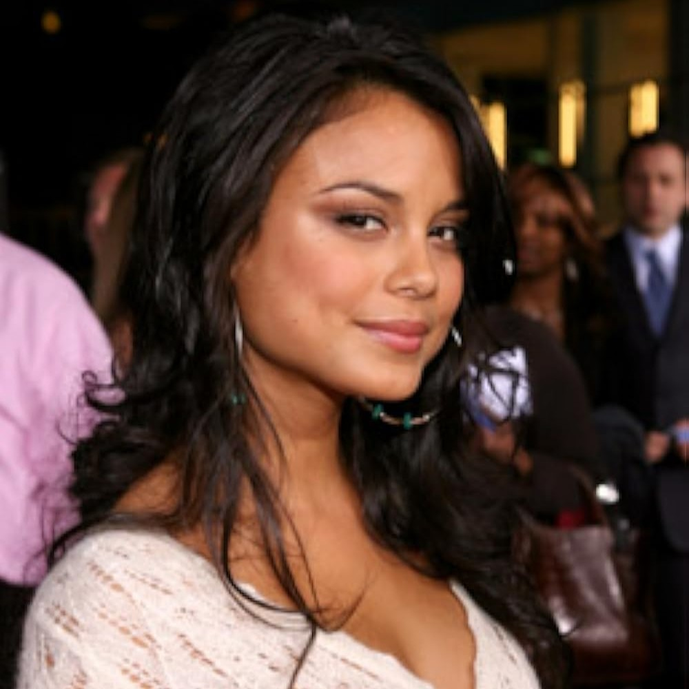
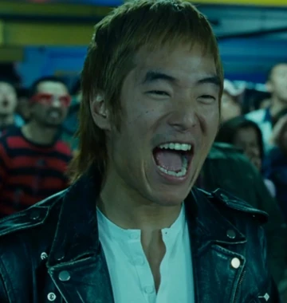

Reparto

Sean Boswell
(Lucas Black)

Twinkie
(Shad Gregory Moss)

Dominic Toretto
(Vin Diesel)

Han Seoul-Oh
(Sung Kang)

Sr.Kamata
(Sonny Chiba)

Earl Hu
(Jason Tobin)

Takashi "DK"
(Brian Tee)

Neela
(Nathalie Kelley)

Morimoto
(Leonardo Nam)
Produccion
La fase de desarrollo comenzó en 2005 bajo la supervisión de Neal H. Moritz, productor de las entregas anteriores. En junio de ese mismo año Moritz contrató a Justin Lin para dirigir la cinta. Aunque Lin no estaba familiarizado con la técnica del drifting (derrape), le entusiasmaba la oportunidad de capturar la energía que había experimentado como espectador en la primera película de la saga. No obstante, su inicio fue complicado:
-Conflicto con el guion: Lin inicialmente consideró los borradores previos como "ofensivos y anticuados", negándose a filmarlos.
-Libertad creativa: Los productores finalmente le permitieron desarrollar la visión a su manera, enfrentándose constantemente al estudio para elevar la calidad del filme.
Desafíos de Rodaje en Japón
Filmar en Tokio presentó obstáculos logísticos casi insuperables por lo que la producción decidió filmar de forma clandestina, ya que fue imposible obtener permisos de rodaje. Debido a estas trabas gran parte de la pelicula que supuestamente ocurren en Japón se filman en otros lugares.
El Regreso de Vin Diesel
A pesar de que las proyecciones de prueba fueron positivas, Universal consideró necesario incluir un cameo estelar para fortalecer el vínculo con la franquicia. Vin Diesel aceptó aparecer como Dominic Toretto, pero bajo un acuerdo poco convencional: en lugar de un pago financiero, negoció que el estudio le otorgara la propiedad total de los derechos del personaje de Riddick y su respectiva franquicia (The Chronicles of Riddick).